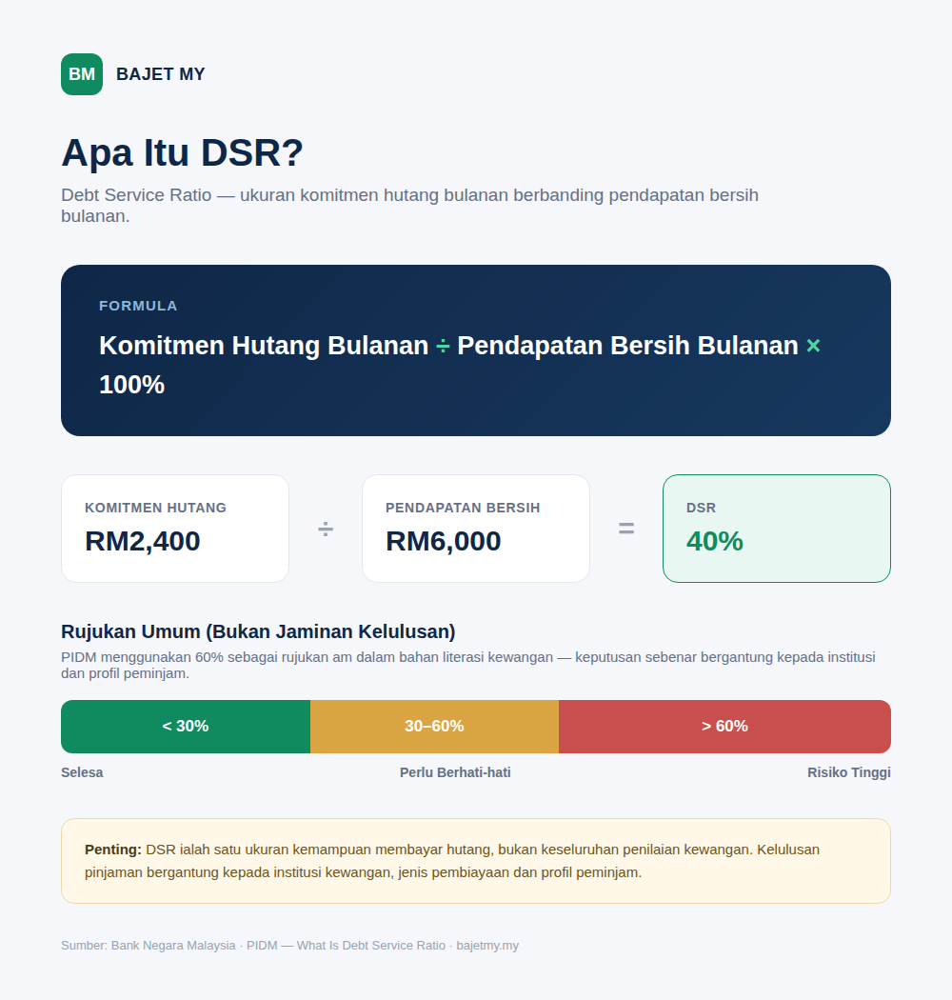

Debt Service Ratio (DSR) ialah ukuran yang membandingkan komitmen hutang bulanan dengan pendapatan bersih bulanan. Ia membantu anda melihat berapa banyak pendapatan yang sudah digunakan untuk membayar hutang.

Formula DSR
DSR = Jumlah komitmen hutang bulanan ÷ Pendapatan bersih bulanan × 100%
Contoh: pendapatan bersih RM5,000 dan komitmen hutang RM1,500.
RM1,500 ÷ RM5,000 × 100% = 30%
Dalam penerangan literasi kewangan PIDM, DSR menggunakan pendapatan bersih dan boleh mengambil kira hutang bank serta bukan bank. Kaedah sebenar boleh berbeza mengikut institusi dan jenis pembiayaan.
Apa yang boleh termasuk dalam komitmen hutang?
Antaranya:
- Pinjaman rumah
- Pinjaman kereta
- Pinjaman peribadi
- PTPTN atau pembiayaan pendidikan
- Pembiayaan bukan bank
- Komitmen kad kredit atau pembiayaan lain yang dinilai oleh pemberi pinjaman
Bank Negara Malaysia menekankan bahawa institusi kewangan perlu menilai kemampuan peminjam berdasarkan pendapatan selepas potongan berkanun dan obligasi hutang yang berkaitan.
Adakah DSR 60% bermaksud pinjaman pasti lulus?
Tidak. Jangan anggap satu angka DSR sebagai jaminan kelulusan.
PIDM menggunakan 60% sebagai rujukan umum dalam bahan literasi kewangannya, tetapi keputusan sebenar bergantung kepada institusi kewangan, jenis pembiayaan, profil peminjam dan penilaian kemampuan keseluruhan.
Bank Negara Malaysia juga menjelaskan bahawa DSR ialah salah satu ukuran kemampuan membayar hutang, bukan keseluruhan penilaian kewangan.
Contoh pengiraan
| Komitmen | Bayaran bulanan |
|---|---|
| Pinjaman kereta | RM700 |
| Pinjaman rumah | RM1,200 |
| Pinjaman peribadi | RM300 |
| PTPTN | RM200 |
| Jumlah | RM2,400 |
Dengan pendapatan bersih RM6,000:
DSR = RM2,400 ÷ RM6,000 × 100% = 40%
Baki 60% bukan bermaksud wang itu semuanya boleh dibelanjakan. Ia masih perlu menampung makanan, utiliti, pengangkutan, tanggungan, simpanan dan perbelanjaan lain.
DSR dan pinjaman rumah
Katakan komitmen semasa ialah RM2,400 dan anda bercadang mengambil pinjaman dengan ansuran RM1,500. Jumlah komitmen menjadi RM3,900.
Dengan pendapatan bersih RM6,000:
RM3,900 ÷ RM6,000 × 100% = 65%
Contoh ini menunjukkan mengapa ansuran baharu perlu dilihat bersama komitmen sedia ada.
DSR bukan keseluruhan gambaran kewangan
Dua orang boleh mempunyai DSR yang sama tetapi keadaan kewangan yang sangat berbeza. Sebelum mengambil pinjaman baharu, lihat juga:
- Perbelanjaan asas bulanan
- Emergency fund
- Simpanan persaraan
- Tanggungan keluarga
- Kestabilan pendapatan
- Kos keseluruhan pembiayaan, bukan hanya ansuran
Bagaimana hendak memperbaiki DSR?
Antara pendekatan yang boleh dipertimbangkan:
- Kurangkan komitmen hutang sedia ada.
- Elakkan menambah hutang tanpa keperluan.
- Bayar hutang secara konsisten, terutama hutang berkos tinggi.
- Tingkatkan pendapatan jika terdapat peluang yang mampan.
- Semak keseluruhan bajet, bukan DSR sahaja.
Matlamatnya bukan sekadar mendapatkan kelulusan pinjaman. Yang penting ialah memastikan bayaran balik masih mampu ditanggung bersama keperluan hidup dan simpanan.
Nota: Kalkulator DSR di bawah ialah alat pendidikan dan anggaran sahaja. Ia tidak menjamin kelulusan mana-mana pinjaman atau pembiayaan.
Ringkasan
DSR ialah ukuran mudah untuk melihat bahagian pendapatan bersih yang digunakan untuk komitmen hutang.
DSR = Komitmen hutang bulanan ÷ Pendapatan bersih bulanan × 100%
Gunakan DSR sebagai salah satu alat untuk memahami kemampuan kewangan anda, bukan sebagai satu-satunya ukuran.
Sumber
- Bank Negara Malaysia — Measures to Promote Responsible Financing Practices
- Bank Negara Malaysia — Financial Stability Review
- PIDM — What Is Debt Service Ratio